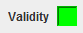

There are three ways to validate the code: In the top menu, pressing the "Validate" button(without the quotes) or by pressing the "Accept" button (without the quotes).
The first two cases are equivalent, performs a validation without closing the window. The third option, the window closes after completing validation.
If the code is valid the box next to the word Validity will be changed to green, as shown in the image:
